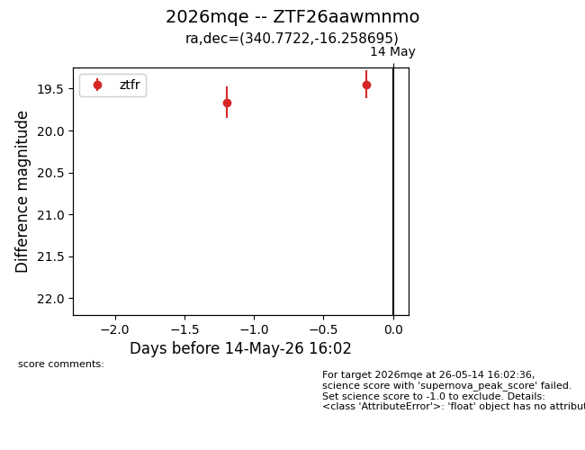
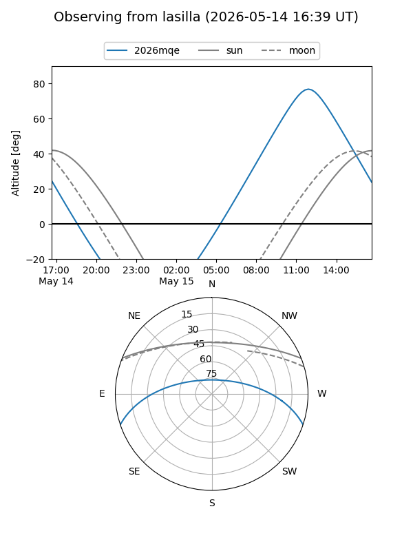
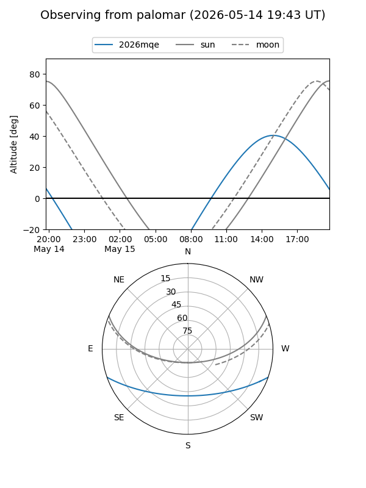

2026mqe
Target 2026mqe at 2026-05-14 16:04
Aliases and brokers:
FINK: link
Lasair: link
ALeRCE: link
TNS: link
YSE: link
alt names
ZTF26aawmnmo (ztf,fink_ztf)
2026mqe (tns,yse)
Coordinates:
equatorial (ra, dec) = 340.7722,-16.25870
equatorial (HMS+DMS) = 22:43:05.34,-16:15:31.30
galactic (l, b) = (46.3545,-58.37977)
Flags:
Photometry:
last ztfr=19.45
2 ztfr detections
Lightcurve

Visibility


Additional plots